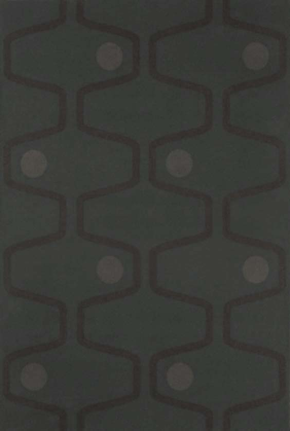
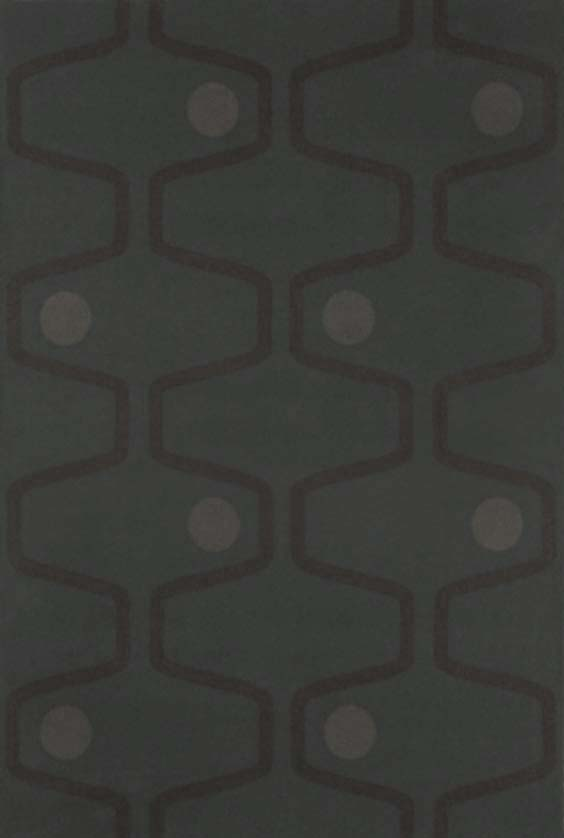
 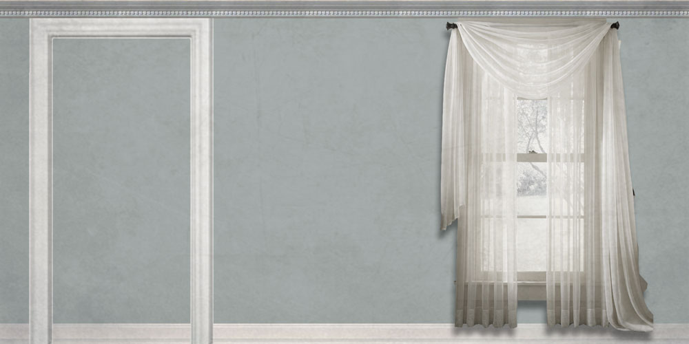
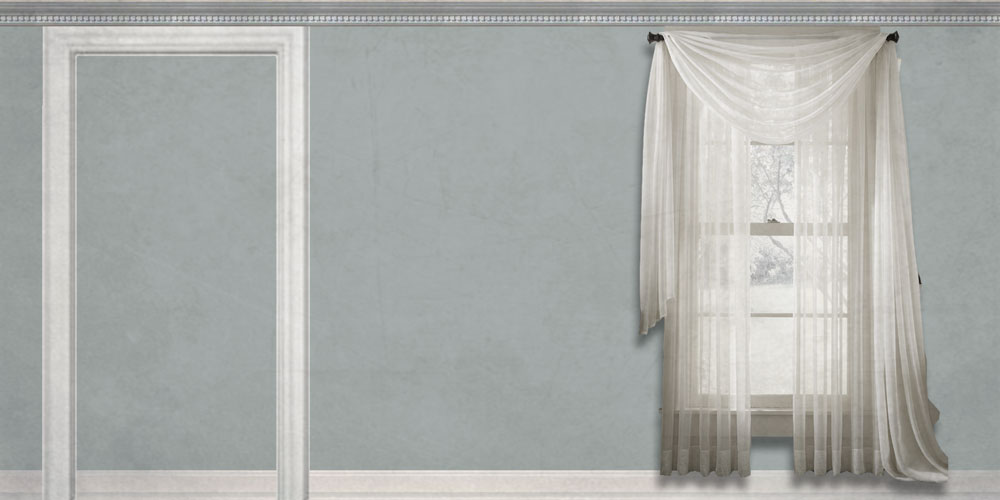

 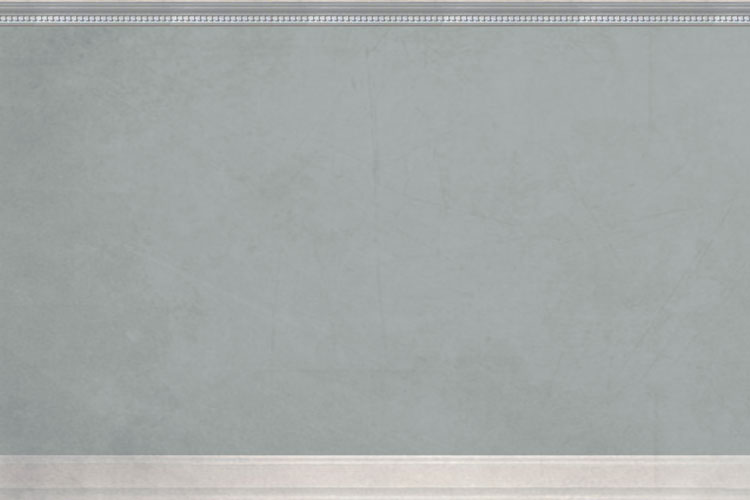
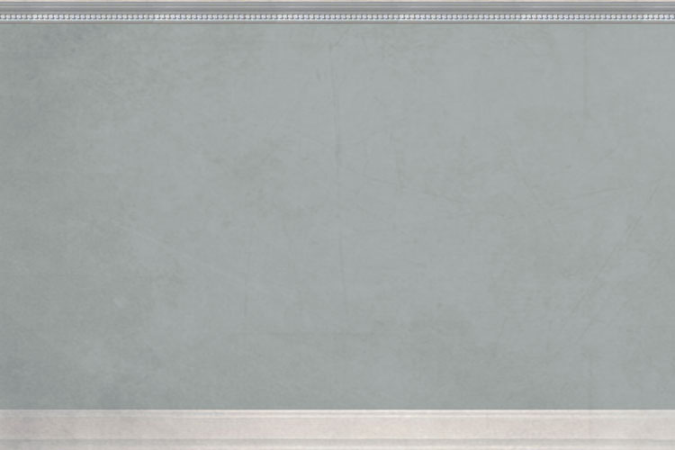

 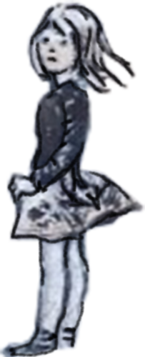
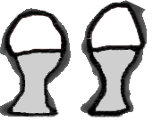
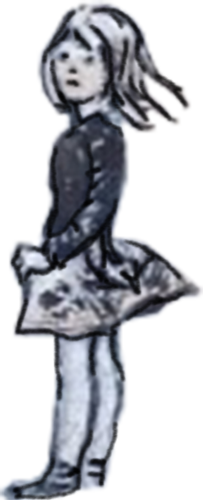
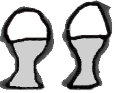

This short introduction to the Catherine Storr archives is a joint project by Newcastle University and Seven Stories, the National Centre for Children's Books.
This experience is loosely based around Catherine Storr’s novel Marianne Dreams and makes use of the new possibilities offered by modern mobile phones to create an immersive and atmospheric experience. Based in web browser technologies, the 3D scene uses the motion sensors of your mobile phone to allow a natural visual exploration.
The Catherine Storr Experience contributes to ongoing work in Digital Cultures at Newcastle University’s Culture Lab into the fusion of cultural heritage with new forms of creativity through the use of digital technologies. We hope that this experimental work encourages new experiences of Catherine Storr’s books and the Catherine Storr archive at Seven Stories.
After enjoying the interactive Virtual Reality guided tour, you may want to learn more about Catherine Storr, her work, and the material held by Seven Stories. There is a link that will lead you to more detailed information at the end of the tour or alternatively go straight to it by clicking here.
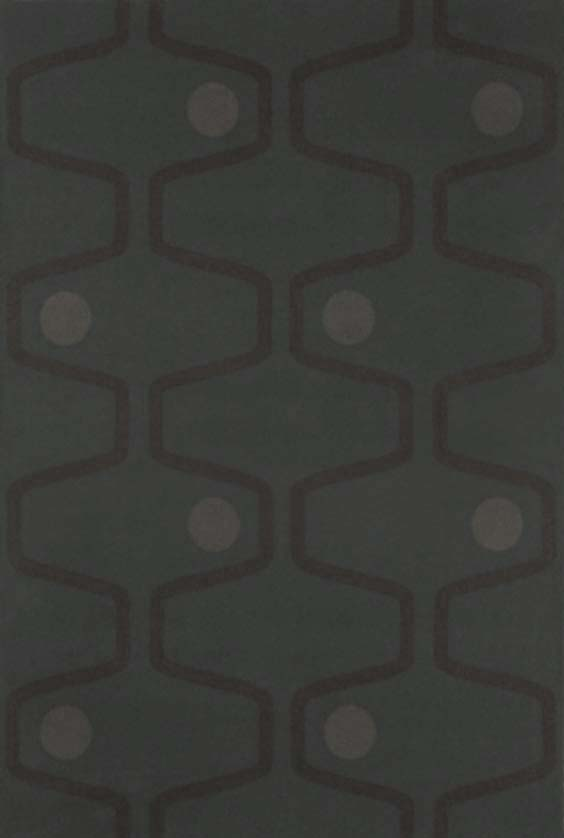
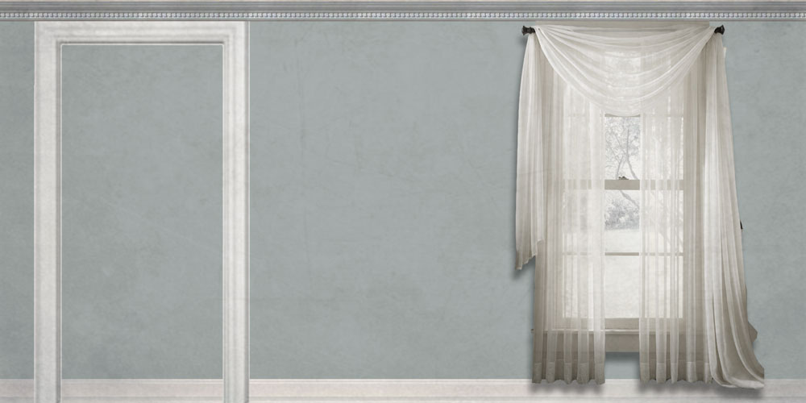
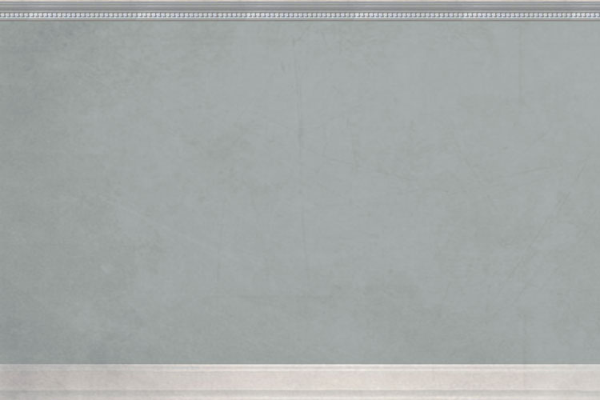
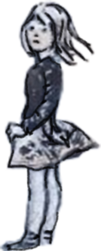
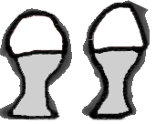